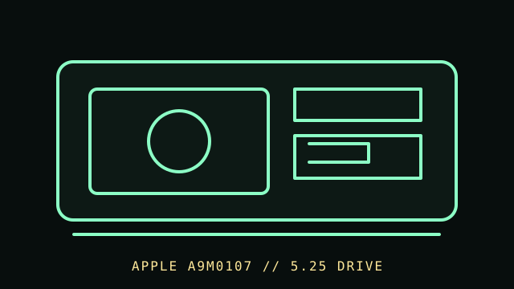

[ FLOPPY DRIVES // IDENTIFIED MODEL ]
Apple 5.25 Drive (A9M0107)
The Apple 5.25 Drive (A9M0107) is an external Apple II floppy peripheral. The model name and system-level controller/cable are essential: this is not a generic external USB drive or bare PC mechanism.

MODEL IDENTIFICATION: Apple 5.25 Drive, model A9M0107; verify rear label and required Apple II controller/cable against the cited service documentation. This record keeps variant-dependent claims qualified; verify the physical unit and applicable manual before connecting, servicing, or formatting media.
Recorded specifications
| Catalog model | Apple 5.25 Drive (A9M0107) |
|---|---|
| Device type | External 5.25-inch Apple II drive |
| Interface / connector | Apple II controller-card/cable interface as documented for A9M0107; controller card and host support determine operation. |
| Media / formats | 5.25-inch Apple II-format disks. Recorded format and usable geometry depend on Apple controller, DOS, and software; do not assign a PC format based on media diameter. |
| Revision caution | Match full model code, board/ROM/firmware revision, connector, cable, and documentation edition. Family-level ratings and host claims do not automatically apply to every unit. |
Host-controller and format compatibility
- Use only with the Apple II host and controller configuration specified for A9M0107. Apple service notes document model-specific controller-card pin/coding details.
- Do not plug into an IBM-PC 34-pin floppy cable based on the word “drive”; verify the connector and pinout in the applicable Apple technical procedures.
- Disk handling and software compatibility follow the Apple II controller/DOS generation; back up original disks with a suitable Apple-aware preservation workflow.
Preservation and safe cleaning
Disconnect the host and power before opening or servicing. Inspect disks before insertion and quarantine moldy or damaged items. Follow the specific Apple 5.25 Drive service procedure; avoid cleaning disk surfaces with liquid or adjusting alignment without equipment/manual guidance.
For a disk acquisition, record the physical media label and condition, drive/model/revision, controller, host, software/firmware, settings, and any errors. Keep original media and raw captures/images unchanged; checksum verified copies and document conversions as derivatives.
Primary manuals & standards/archive references
- Apple Service Technical Procedures, Apple II Family, Volume 2 — Internet ArchiveApple primary service reference, including model/service information; locate A9M0107-specific entries within the volume.
- Apple Tech Info Library: Apple 5.25 Drive controller-card pins — Internet ArchiveArchived Apple technical note relevant to controller-card identification/pin configuration.
- Apple II disk service procedures — Apple Disk Docs archiveSupplementary Apple floppy service manual.
Source scope is stated per link. Prefer the matching manufacturer manual and revision over family summaries. Capacities and recording modes are omitted when not supported for the exact model and format.